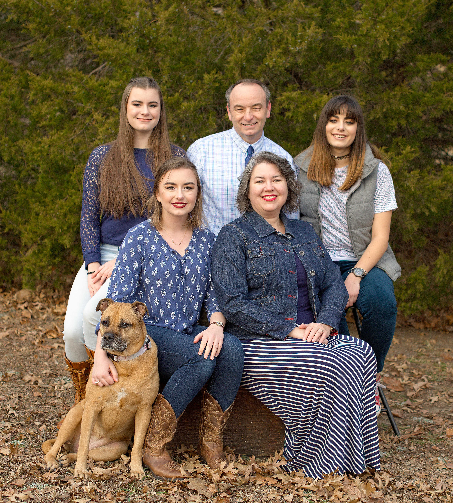

Rachel Ciarlante

About me
Number four of six children, I was born and grew up in Louisville Kentucky and have raised my family in Louisville as well. Married for 25 years, my husband and I have three daughters. I spent the majority of my time, while my children were young, at home raising them and working when time permitted. Now that they are grown, I have the opportunity to pursue my education.
I researched long and hard on what I wanted my career to be and finally settled on Web Design because I enjoy computers, like to code, and love design, color, form, and function. I like to problem solve and figure out solutions to difficult situations. To me, Web design is merging several items in which I excel. I also wanted a career in which I have opportunity to eventually work from home. Someday (down the road), my husband and I plan on traveling and I would like to take my work with me and earn a living while seeing the country.
In my spare time, I like to sing, quilt, knit, hike, eat healthy and spend time with my family. My husband and I enjoy doing things with our friends and love playing games, especially card games. But mostly we love to be around people we love and laugh and enjoy each other’s company.
I am currently a student at Sullivan University. Studying Web Design and Programing and plan to graduate Spring of 2019. I have over 15 years of successful work experience in Office Administration, General Management and Service. I enjoy working in fast-paced, upbeat, positive environments in which I get to use my skills to support others and accomplish challenging goals. I am looking to work at a supportive company that will allow me to use my skills and grow as a person.